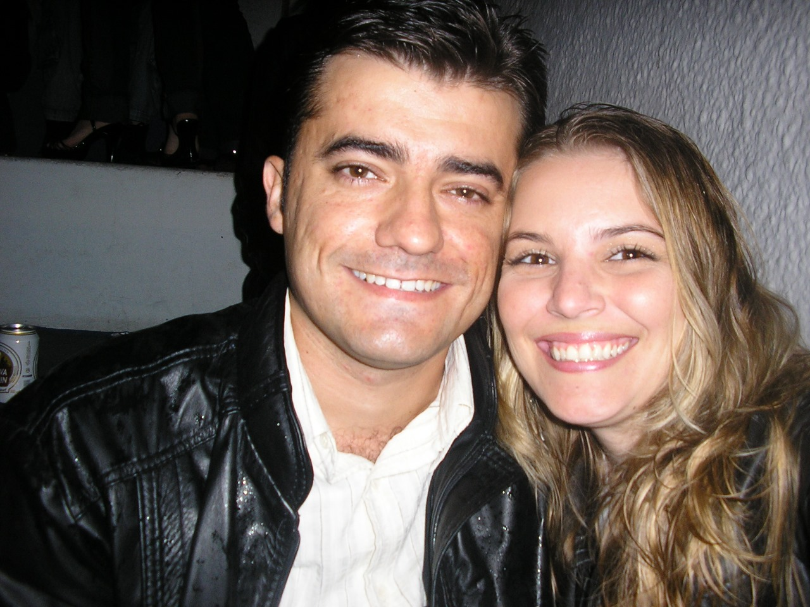
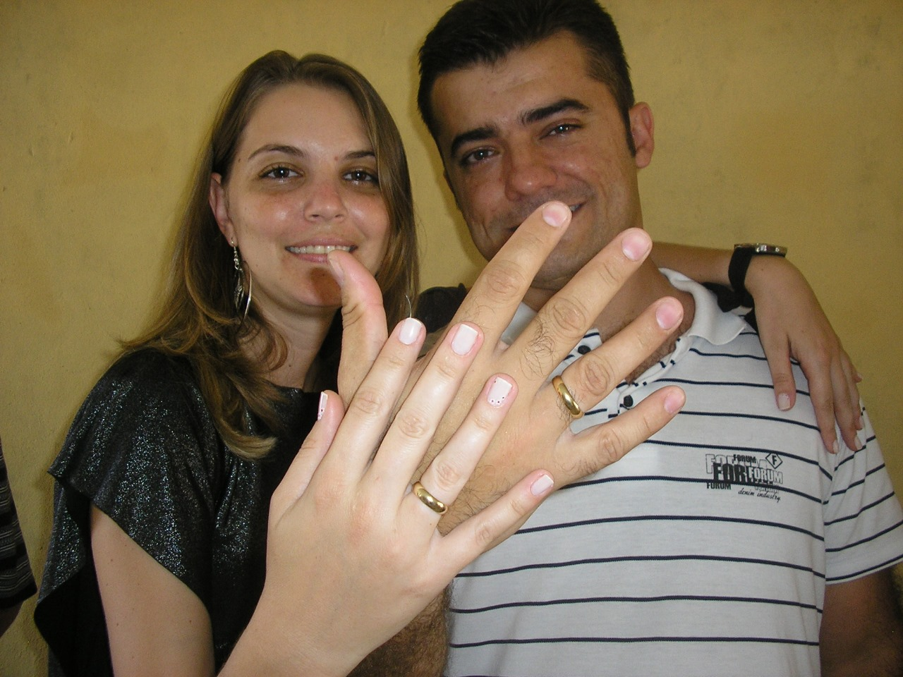
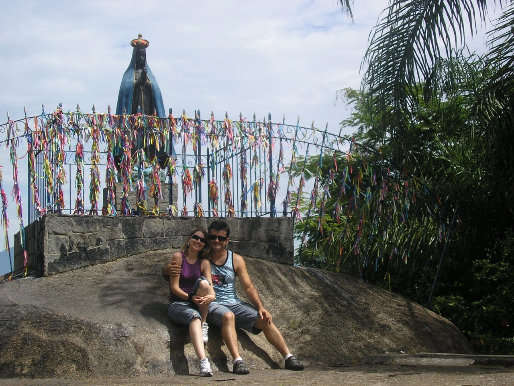
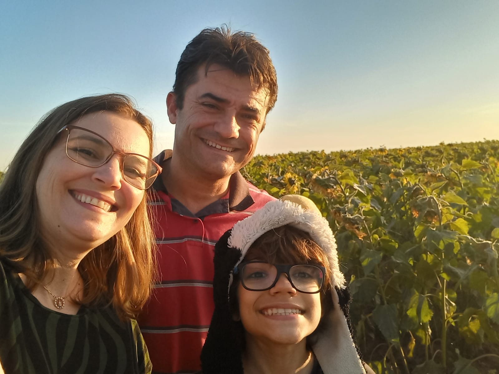
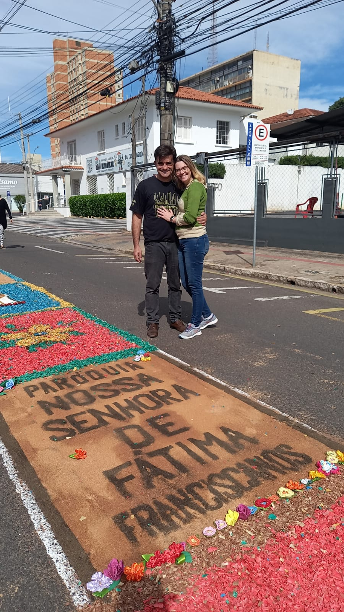
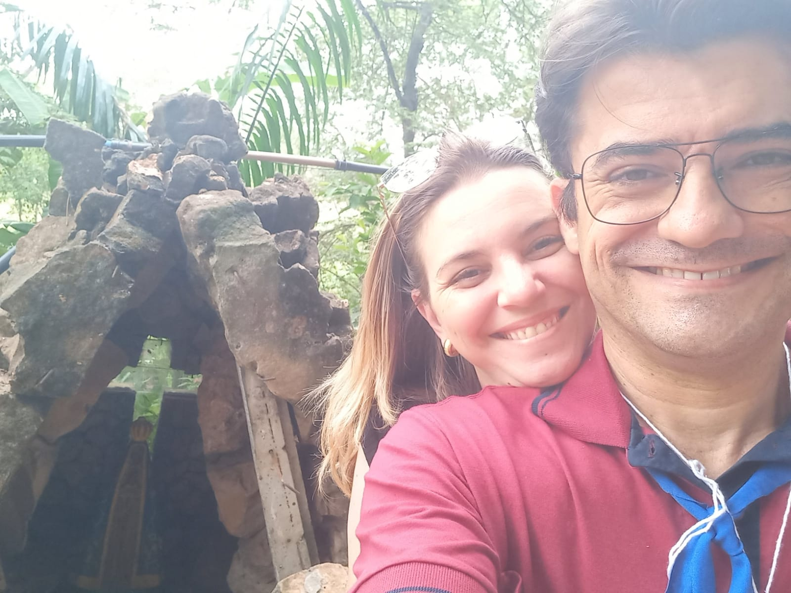
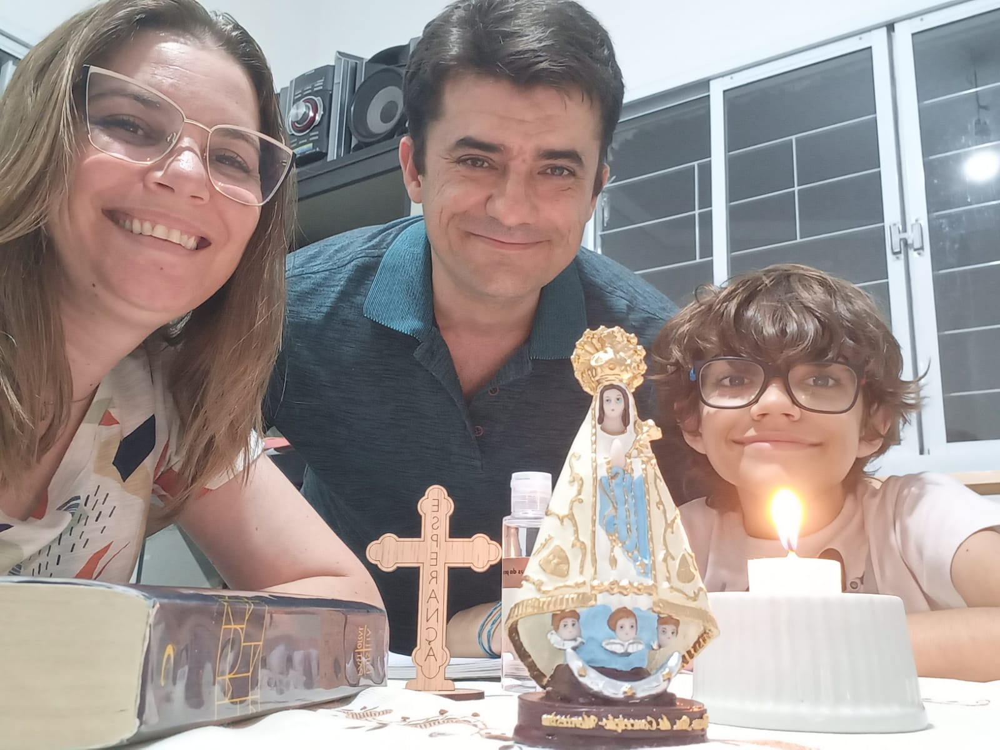
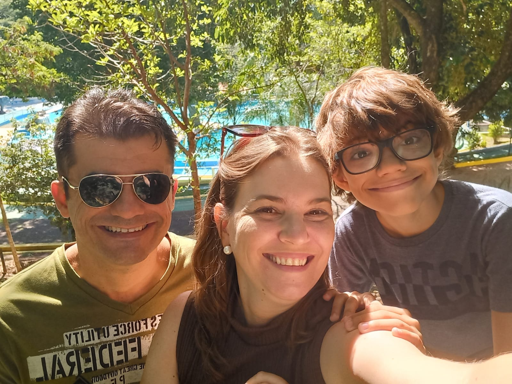

Em 2007, uma promessa de Deus e Nossa Senhora se cumpriu em nossas vidas.
Desde então, somos presentes de Deus um para o outro!
Nossas alianças de compromisso e de noivado foram abençoadas no Santuário de Aparecida.
E mesmo nas dificuldades, sentimos a intercessão de Nossa Senhora em nossas vidas e recebemos mais um presente.
O Lucas trouxe luz e propósito para nossas vidas!
Estamos sempre juntos, nos fortalecendo na Palavra de Deus e participando em comunidade da Missa das crianças, catequese, coroação de Nossa Senhora de Fátima, da quermesse e do Corpus Christi.
Um retiro de casais nos trouxe a vontade de nos conectarmos ainda mais.
Com o pensamento de "Nada antes, nada depois, tudo no tempo de Deus", nos sentimos prontos para receber o Sacramento do Matrimônio e, através dos princípios da Fé, do Amor e da Caridade, continuar vivendo nossa vocação de ser família.
Família amada, escolhida, abençoada e santificada por Deus, protegida por Maria e salva por Jesus!